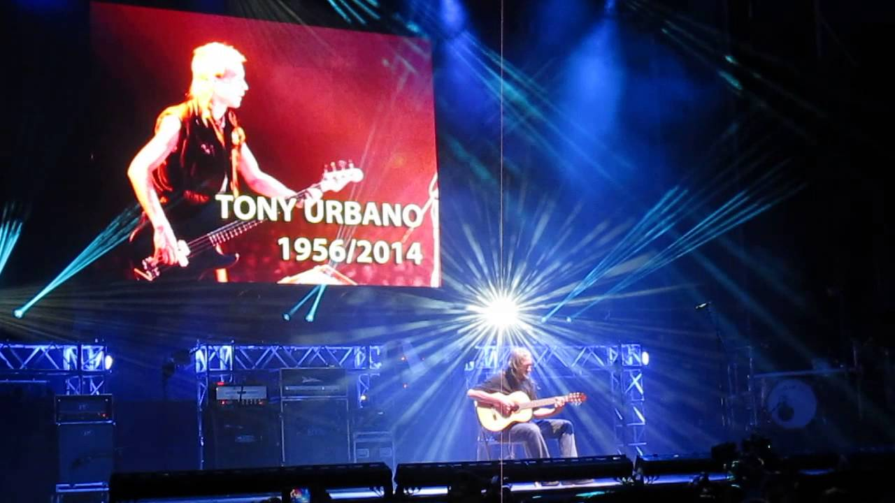

Concierto en Barcelona
23 de diciembre de 2018 — Sant Jordi Club
Detalles del evento
| Concepto | Información |
|---|---|
| Aforo | 5.000 personas (entradas agotadas) |
| Precio de las entradas | Agotadas |
| Fecha y hora del concierto |

Crónica
La gira de despedida Mi tiempo, señorías…
hizo parada en Barcelona este diciembre en el Sant Jordi Club,
donde Rosendo ofreció dos noches consecutivas con todas las entradas agotadas desde hacía meses.
La velada comenzó con Rodrigo Mercado y su banda (guitarra, bajo, teclado y batería) como teloneros, calentando el ambiente con temas de su repertorio inspirados en el sol y la tierra. A las ocho de la tarde, la sala empezó a llenarse mientras sonaban sus canciones. Tras agradecer a su padre y al público su apoyo, el relevo llegó con un cambio de guitarra y la entrada de Rosendo al escenario.
Pasadas las 21:00 horas, y con "Safe in NY City" de AC/DC sonando como introducción, Rosendo, acompañado por Rafa J. Vegas (bajo) y Mariano Montero (batería), inició su último concierto de la gira bajo una impresionante escenografía con pantallas traseras, videoclips y juegos de luces. Un montaje poco habitual en su trayectoria, que sorprendió a los seguidores de toda la vida acostumbrados a shows más sobrios.

El repertorio incluyó temas como Aguanta el tipo
y Por meter entre mis cosas la nariz
,
seguidas de Cada día
, Muela la muela
, El ganador
y una versión más rockera de No dudaría
de Antonio Flores.
El blues Mala vida
sirvió de respiro antes del clímax con Flojos de pantalón
,
donde el público saltó y cantó al unísono con el de Carabanchel.
La recta final llegó con Pan de higo
y Navegando
,
seguidas de Agradecido
, Loco por incordiar
y Maneras de vivir
.
La noche terminó con Qué desilusión
, cerrando así una gira que pasará a la historia del rock español.
Ubicación
Cierre
"Flojos de pantalón, pero nunca flojos de corazón." — Rosendo Mercado